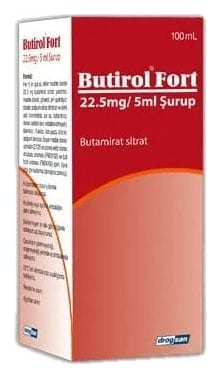

Butirol Fort 22.5 mg/5 ml Şurup ,100 ml

Ne için kullanılır
KT · Bölüm 1• BUTİROL FORT, çocukların açamayacağı bir beyaz PE kapağı olan 100 mL’lik amber renkli cam şişede 5 mL ölçülü kaşık ile birlikte sunulan, açık pembe renkli, berrak, meyve aromalı çözeltidir. • BUTİROL FORT etkin madde olarak butamirat sitrat içeren, şurup formunda bir ilaçtır.
• BUTİROL FORT, “öksürük baskılayıcı ilaçlar” olarak adlandırılan bir ilaç grubuna dahildir. • BUTİROL FORT çeşitli nedenlerden kaynaklanan öksürüğün şikayetlere yönelik (semptomatik) tedavisinde kullanılır.